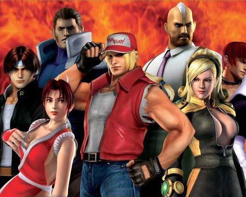
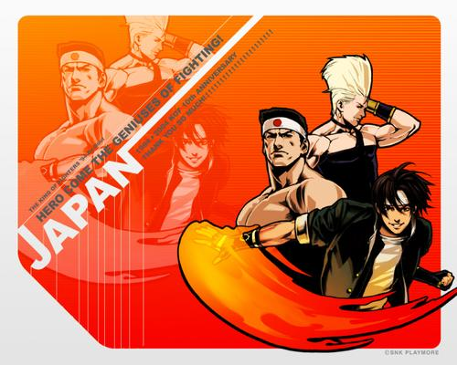

Ano de 1994. O mundo sofreu várias mudanças e a tecnologia avançou bastante. Porém, no mundo das lutas, mais uma eclosão dramática ia acontecer. Este ano, o homem conhecido como Rugal Bernstein começou a agitar o mundo. A reputação dele como um líder do mercado negro, perícia em armas e tráfico de drogas eram insuperáveis e ainda era conhecido por muitos como um dos homens mais ricos do mundo. A bordo do Blacknoah, seu porta aviões privado, ele recebe e entrega suas ações. Rugal viajou pelos mares do mundo, sem que os governos mundiais pudessem pará-lo. Rugal não só era temido como também era respeitado no mundo do crime. Ele também era conhecido por ser um formidável lutador. É fato que qualquer pessoa que esteve na frente dele a bordo do Blacknoah não escapou viva.
Rugal, aborrecido pela falta de competição, teve uma ideia ousada. Ele ordenou a uma das secretárias pessoais, Mature, para ir ao redor do mundo e entregar oito convites para certas pessoas. Estes convites eram inclusos em envelopes brancos, com selos vermelhos marcados com o sinal de Rugal. Ele queria retomar o velho torneio The King of Fighters, e leva isto por conta própria. Porém, ele criou algumas regras novas este ano. Em vez de lutas um-a-um, o novo sistema de competição incluiu batalhas entre times de três pessoas. As lutas aconteciam entre estes times assim: Se um dos parceiros fosse derrotado por um dos parceiros do outro time, o próximo parceiro entra para lutar com o vencedor, e assim vai até todos os três parceiros de um time serem derrotados. Porém, antes do torneio começar, um homem se levantou ante Rugal. Pronto para lutar até o fim e terminar com sua estúpida ambição. Claro que Rugal não foi sequer intimidado.
Depois de dias começou o novo torneio The King of Fighters. Oito times entraram, representando oito países diferentes. Japão, com a geração mais nova de Heróis Asiáticos. Itália, tendo nada mais nada menos que os Lobos Solitários, que contava com campeão Terry Bogard. México, mostrando o poder do Caratê de Kyokugenryu, com o campeão de uma edição passada Ryo Sakazaki. Brasil, representado pelos mercenários de Ikari. China, combinando velhas e novas gerações. Coréia, fazendo uma combinação estranha de justiça e crime. Inglaterra, o único time todo feminino. EUA com os três mais importantes esportes do país. Assim, as batalhas começaram. Encontros emotivos aconteceram, a paixão e a fúria na batalha se encontraram uma vez mais, com mais emoção do que antes. Tantos lutadores diferentes, tantos estilos diferentes. Era encantador ver tantos lutadores habilidosos se enfrentando em uma batalha que não apresentava ódio, só a satisfação e a honra de ganhar. As batalhas eram longas e sem fôlego e os vencedores só eram definidos em pequenos instantes.
No fim, não foram os Lobos Solitários, mas o time do Japão que veio a ser o vencedor. Este time teve dois lutadores jovens e um guerreiro experiente. Um dos jovens era Kyo Kusanagi, o mais recente descendente do Clã Kusanagi, famoso por suas chamas. O outro era Benimaru Nikaido, um lutador atrevido e arrogante, perito em shooting karate (uma variação de kickboxing e muay thai) e também tendo o poder do raio. O experiente era Goro Daimon, o campeão de Judô. Com sua força impressionante faz a própria terra tremer. Todos os três foram definidos por um campeonato de artes marciais nacional que aconteceu no Japão. Kyo foi o ganhador, vencendo Benimaru nas finais, Daimon foi o terceiro depois de ser vencido por Kyo nas semi-finais.
Mature, a secretária pessoal de Rugal, convidou o Time do Japão para levá-los de helicóptero ao Blacknoah. A batalha final ia começar. Rugal saudou o time quando entraram no Blacknoah, acariciando sua pantera e com uma taça de vinho nas mãos. Ele riu e honestamente pensou que eles não iam durar muito tempo. Chocados com esta declaração, os três lutadores foram paralisados com a visão ao redor deles. Grupos e grupos de estátuas de lutadores estendendo-se em todos os lugares. Com outra risada má, admite Rugal que todos esses lutadores uma vez estiveram vivos e que ele tinha derrotado a todos. Ele colocou seus corpos num banho de aço de forma que eles foram imortalizados e o Time do Japão era o próximo na sua tímida coleção.
Rugal lutou com os três lutadores. Benimaru e Daimon lutaram bem, mas só conseguiram dar mais raiva a Rugal, lhe obrigando a usar suas melhores técnicas. Ele confessa que nunca teve que chegar tão longe, mas as circunstâncias o levaram a isso. Usando o seu poder máximo, Rugal usou técnicas iguais as de Geese e Krauser! Depois de derrotar Benimaru e Daimon, Kyo foi o último a ficar de pé. Mesmo com Kyo tendo lutado com todas as forças, Rugal se mostrou um lutador cruel, e começou a fazer Kyo sentir o calor da batalha. Quase de joelhos, Kyo com olhos doloridos, viu um corpo no canto do quarto. Com descrença, viu que se tratava de seu pai, Saisyu Kusanagi. Ele tinha se mostrado para enfrentar Rugal antes do torneio, mas tinha sido derrotado, talvez até mesmo morto. Kyo não pôde aguentar mais isso. Ele explodiu em raiva e enfureceu-se completamente. Rugal é atacado por um tornado vermelho. Incapaz de evitar a raiva de Kusanagi, Rugal desabou em derrota. Com a voz pausada pela dor, Rugal condena o Time do Japão silenciosamente para uma morte rápida. Louco de vingança, Rugal pegou um dispositivo estranho, e apertou o botão. O Blacknoah ia agora se auto destruir! Kyo, Benimaru e Daimon sairam vivos por pouco. O Blacknoah foi tomado pelas chamas e afundou no oceano. Assim, o The King of Fighters chega novamente ao fim, e da mesma forma que nos últimos dois anos, ninguém foi visto para dar continuidade ao torneio.